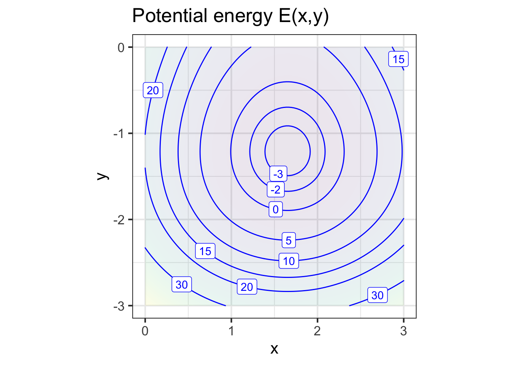
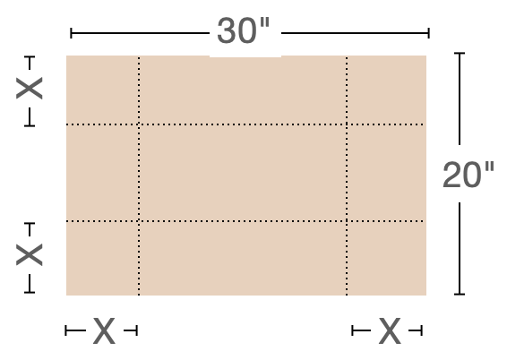
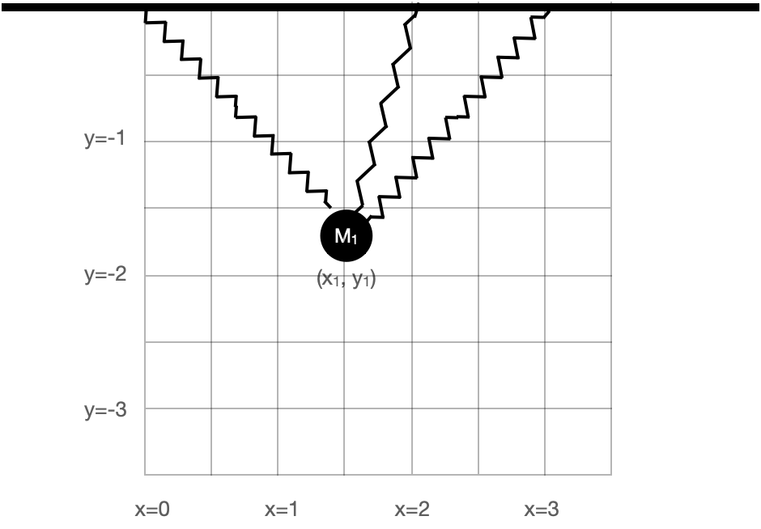
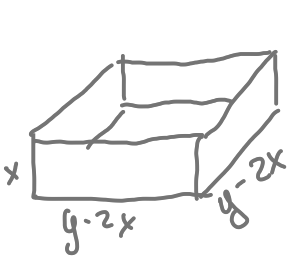
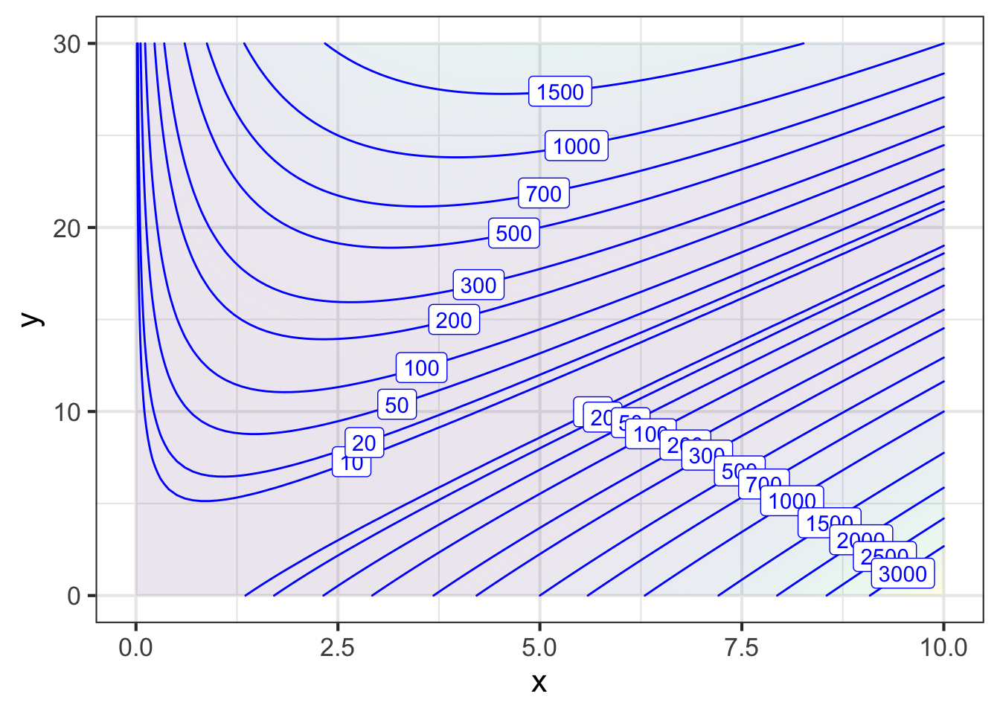
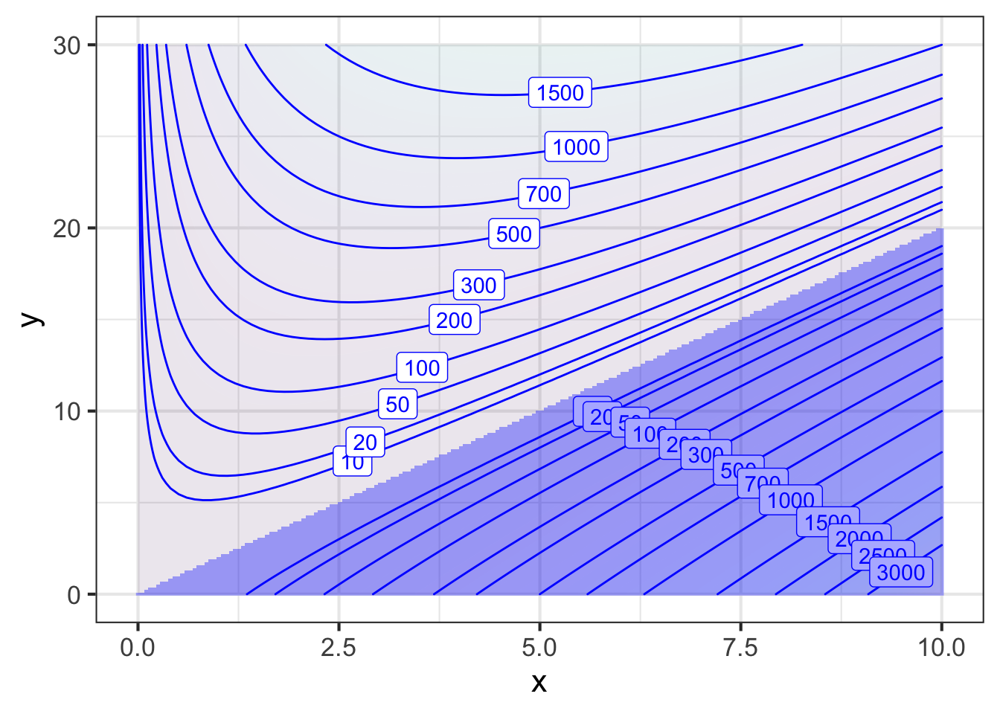
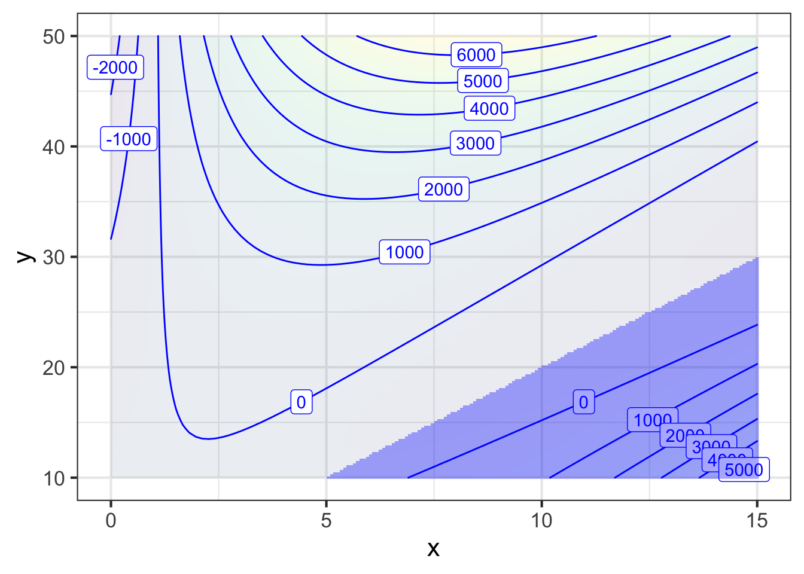
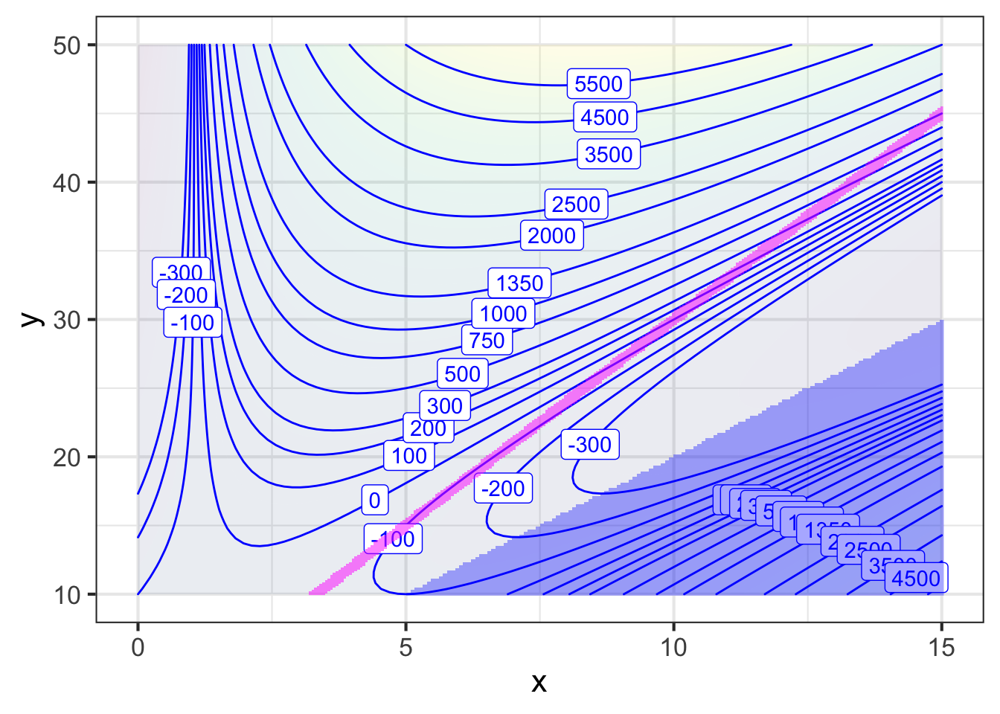
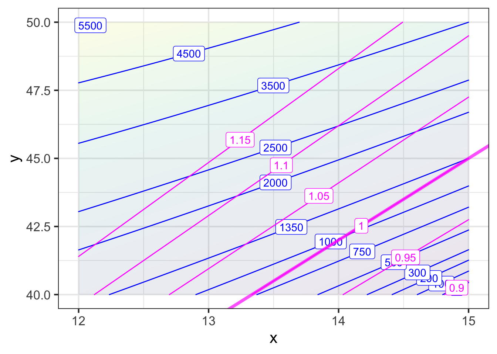
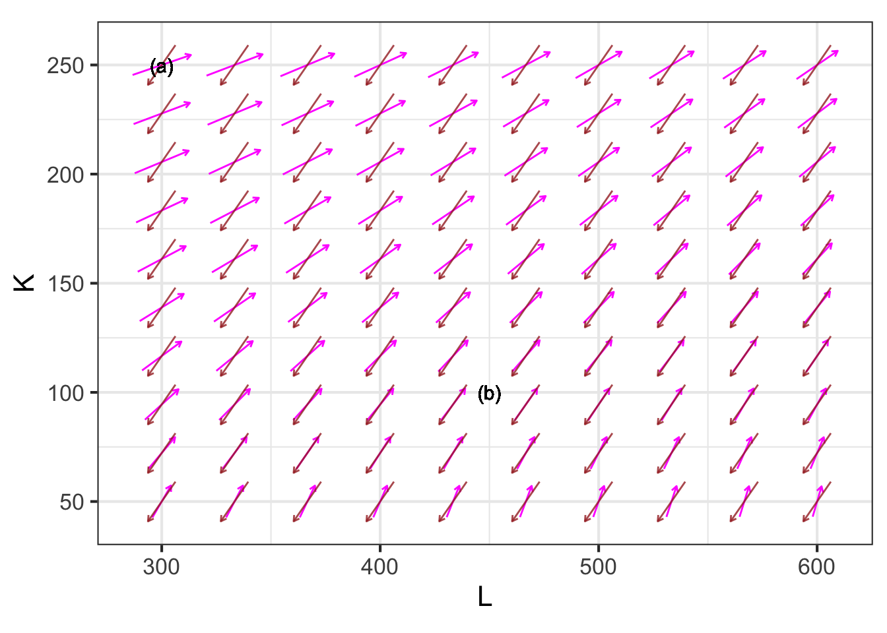

50 Optimization and constraint
Chapter 24 introduced optimization and some of the terms used to describe optimization problems:
Objective function, that is, the quantity that is to be made as large as possible (maximization) or as small as possible (minimization) depending on the modeling context.
argmin and argmax values, that is, the value of the inputs to the objective function that produce the optimal output.
max and min, the output value of the objective function when the input is an argmax or argmin respectively.
A simple optimization problem has three main phases:
- a modeling phase in which the objective function is identified or constructed;
- a solution phase where argmin or argmax inputs are found.
- an evaluation phase where the objective function is applied to the argmin and/or argmax, and the result interpreted in terms of the real-world task at hand.
To illustrate, consider this simple but unrealistic problems found in hundreds of calculus texts: Finding the configuration to construct the rectangular box with the largest possible volume out of a piece of cardboard. The modeling phase starts with a representation of the box-construction and volume-finding process. Suppose, for the sake of simplicity, that we are working with a piece of cardboard fixed at 20 inches by 30 inches. For box construction, we will propose cutting out squares from each corner of the box of some side length \(x\). Those squares will be discarded and the box formed by folding up the flaps generated by the squares’ removal, as in Figure 50.1.

For the volume of the box, we will multiply the area of the bottom of the box by the height \(x\). Examination of Figure 50.1 should be enough to convince you that the volume \(V\) is a function of \(x\):
\[V(x) = \underbrace{\strut x}_\text{height} \cdot \underbrace{(20-2x)}_\text{width}\cdot \underbrace{(30-2x)}_\text{length} = x(600 - 100 x + 4 x^2)\ .\] Since the goal is to find the maximum possible volume, \(V(x)\) is our objective function.
The solution phase can be completed by drawing a graph of \(V(x)\) and finding the \(x\) corresponding to the peak value of \(V(x)\). We will leave this for you to do in a sandbox; you can figure out the relevant domain by noting that the corner squares cannot overlap. Calculus texts typically emphasize another approach, using symbolic differentiation to examine \(\partial_x V(x)\) and solve for \(x^\star\) such that \(\partial_x V(x^\star) = 0\). The derivative is \[\partial_x V(x) = 600 - 200 x + 12 x^2\ .\] The symbolic solution task is to find the zeros of \(\partial_x V(x)\). They work out to be \(x_1^\star = 3.92\) or \(x_2^\star = 12.74\).
The third phase of an optimization problem, evaluation phase, can start with plugging in the objective function the values of \(x^\star\).
\[V(x_1^\star) = 1056.3\ \text{in}^3 \ \ \ \ \text{and}\ \ \ \ V(x_2^\star) = -315.6\ \text{in}^3\] It is common sense that \(x_2^\star\) is not a viable solution. The negative volume at \(x_2^\star\) is a consequence of looking at \(V(x)\) beyond the sensible domain for cardboard boxes. More generally, as part of the evaluation phase we can look at the value of the convexity \(\partial_{xx} V(x^\star)\) to find out whether an \(x^\star\) value is an argmax or an argmin. Since \(\partial_{xx} V(x) = 24 x - 200\) we see that \(\partial_{xx} V(x_1^\star) < 0\), corresponding to an argmax. Alternatively, instead of computing the convexity, we could check whether we have an argmin or an argmax by evaluating the objective function at a nearby input.
Additional examination of the phase-two solution can give useful information, such as an indication of how sensitive the output is to small changes of the input near the argmax (or argmin). For example, setting \(x=4\) in will produce a volume output \(V(4) = 1056\) in2, hardly different than the “exact” maximum of 1056.3 in3 and perhaps preferred for the person who wants to make standard-size boxes.
The evaluation phase in a genuine application (as opposed to a textbook toy example) should also include a reflection on how well the model reflects the real-world situation. For example we’ve neglected the creases that arise from folding cardboard, so a more complete examination would estimate this effect. And the person skeptical about calculus-book chestnuts might wonder whether the object is really to create a box without a top!
Commonly, optimization problems involve much more complicated objective functions with many inputs. The next section considers the basis for a more general and practical approach to the solving phase of optimization. Later sections examine how this more general approach leads to methods for approaching the sort of real-world optimization problem where there are multiple objectives.
50.1 Gradient descent
The general approach we will take to the solving phase of optimization problems will be iterative as in Chapter 48. Start with an initial guess for an argmin and then construct a new function that can improve the guess. Applying this improvement function iteratively leads to better and better estimates of the true argmin.
For illustration purposes, we will use optimization problems where the objective function has two inputs. Such objective functions can be graphed on paper or a display screen and it is possible to see the action of the iterative improvement process directly. For optimization in problem with many inputs, the improvement can be monitored from the objective function output at each step.
Tip
Spring-mass systems: an example context
As our example context for discussing the optimization process, we will consider how to use optimization to calculate the configuration of simple mechanical systems consisting of interconnected springs and masses. Such configuration problems are especially important today in understanding the structure and function of proteins, but we will stick to the simpler context of springs and masses.
Figure 50.2 shows a mechanical system consisting of a mass suspended from a fixed mounting by three nonlinear springs.

The mass is shown by a black circles. Springs are the zig-zag shapes. The bold bar is the fixed mounting, as if from a beam on the ceiling of a room. The system has an equilibrium configuration where the springs are stressed sufficiently to balance each other left to right and to balance the gravitational force downward on the mass.
We want to calculate the equilibrium position. The basic strategy is to model the potential energy of the system, which consists of:
- the gravitational potential energy of the mass.
- the energy stored in stretched or compressed springs.
Since the configuration of the system is set by the coordinate \((x_1, y_1)\), the potential energy is a function \(E(x_1, y_1)\). For brevity, we will leave out the physics of the formulation of the potential-energy function; shown in Figure 50.3.
The potential energy function \(E(x,y)\) has a bowl-like shape. The bottom of the bowl—the argmin—is near \((x=1.7, y=-1.3)\). In terms of Figure 50.2, the equilibrium position is a bit upward and to the right of the position shown in the figure.
With a graph of the objective function like Figure 50.3, the solution phase is simple; a graph will do the job. But for more complicated objective functions, with more than 2 inputs, drawing a complete graph is not feasible. For example, in the spring-mass system shown in Figure 50.4, the potential energy function has six inputs: \(x_1, y_1, x_2, y_2, x_3, y_3\). In genuine applications of optimization, there are often many more inputs.

In a multi-input optimization problem, we don’t have a picture of the whole objective function. Instead, we are able merely to evaluate the objective function for a single given input at a time. Typically, we have a computer function that implements the objective function and we are free to evaluate it at whatever inputs we care to choose. It is as if, instead of having the whole graph available, the graph is covered with an opaque sheet with a loophole, as in Figure 50.5.

We can see the function only in a small region of the domain and need to use the information provided there to determine which way to move to find the argmin.
The situation is analogous to standing on the side of a smooth hill in a dense fog and finding your way to the bottom. The way forward is to figure out which direction is uphill, which you can do directly from your sense of balance by orienting your stance in different ways. Then, if your goal is the top of the hill (argmax) start walking uphill. If you seek a low point (argmin), walk downhill.
The mathematical equivalent to sensing which direction is uphill is to calculate the gradient of the objective function. Chapter 25 uses partial differentiation with respect to each of the input quantities to assemble the gradient vector, denoted \(\nabla f() = \left({\large \strut} \partial_x f(), \ \partial_y f()\right)\). In terms of Figure 50.5, where we are standing at about \((x_i=0.8, y_i=-2.3)\), we would evaluate the each of the partial derivatives in the gradient vector at \((0.8, -2.3)\).
The gradient points in the steepest direction uphill so, once you know the direction, take a step in that direction to head toward the argmax, or a step in the opposite direction if you seek the argmin. The process of following the gradient toward the top of the hill is called gradient ascent. Correspondingly, following the gradient downhill is gradient descent.

For humans, the length of a step is fixed by the length of our legs and the size of our feet. The mathematical step has no fixed size. Often, the modeler gains some appreciation for what constitutes a small step from the modeling process. Referring to Figure 50.4 for example you can see that a small increment in \(x\) is, say, \(0.1\), and similarly for \(y\). There is little point in taking an infinitesimal step—that gets you almost nowhere! Instead, be bold and take a finite step. Then, at your new location, calculate the gradient vector again. If it is practically the same as at your earlier position, you can wager on taking a larger step next time. If the new gradient direction is substantially different, you would be well advised to take smaller steps.
Fortunately, a variety of effective ideas for determining step size have been implemented in software and packaged up as algorithms. The modeler need only provide the objective function in a suitable forma starting guess for the inputs.
Application area 50.2 Minimum potential energy
The potential energy function of the spring-mass system in Figure 50.4 is available as the R/mosaic function PE_fun2(). This potential energy function has six inputs: the \(x\) and \(y\) coordinates of each of the three masses. The code below shows how to use the R/mosaic argM() function to locate an argmin of the potential energy.
The argM() function reports the final result, the end of the path followed in descending the gradient field. Figure 50.7 gives a movie of the path as it is being followed.

At the start of the movie, the masses are (absurdly) misplaced and far from their equilibrium position. As system configuration moves downhill toward the argmin of the potential energy function, the masses sort themselves out.
The two gradient-field frames show a different two-dimensional slices of the potential energy function which has six inputs. Watch the gradient-fields carefully to see that the field itself is changing as time goes by. All six inputs are changing. At each point in time, we are plotting the gradient field as a function of the two inputs shown on the axes. These stay the same through the whole movie, but the other four inputs are changing as the system moves along the gradient descent path. The last frame shows the gradient field at the final position in six-dimensional space. You can see that the early parts of the path are not aligned with the end-of-path gradient fields, but they were aligned at the earlier time when each point in the path was passed.
The familiar tilde-expression format used by argM() and the other R/mosaic functions is suitably compact for function of one or two arguments, but for functions with many inputs it becomes ungainly. For objective functions with many inputs, a different programming style is more appropriate that packages up the multiple inputs into a single, vector input. Since this is not a programming book, we won’t go into the vector-input programming style, but be aware that in professional-level work, learning new tools for programming becomes essential.
50.2 Objectives and Constraints
Many real-world decision-making settings do not fit neatly into the framework of constructing an objective function and then finding the argmin (or argmax). A common situation is having multiple objectives. These objectives often compete and the output of the respective objective functions may not necessarily be directly comparable. For instance, in health care one objective is to save lives, while another is to minimize costs. But lives and money are not directly comparable.
Often, the original problem statement does not include all of the objectives and the modeler needs to be perceptive to discern important objectives left out of the initial description of the problem. When such missing objectives become apparent, it is necessary to visit the modeling phase of the problem to insert the new objectives. By adopting the right approach to modeling, such situations can be readily handled and, even better, the modeling phase can bring new insight into the real-world problem.
To illustrate, let’s returning to the mathematically simplified problem of constructing an optimal cardboard box. Before, we stipulated that the raw cardboard stock has dimension 20 inches by 30 inches. Now we will generalize and work with a piece of cardboard that has edges of length \(y\) from which, as before, we will cut out square corners of length \(x\) on a side. (See Figure 50.8). Our objective is to make a box with the largest possible volume. (This will be an argmax problem.)


The area of the bottom of the box is \((y - 2x)^2\) and the box height is \(x\). The objective function is the volume of the box, area times height: \[V(x, y) \equiv x (y - 2x)^2\ .\] There are two inputs, \(x\) and \(y\), so a simple plot should suffice to find the argmax.

Scanning Figure 50.9 reveals a couple of things that you might not have anticipated. First, the argmax is in the extreme lower-right corner of the graphics frame, not in the center as in previous examples. Second, the argmax in this corner, \((y=0, x=10)\) is logically inconsistent with the idea of a cardboard box.
The inconsistency stems from an inadmissible value for \(x\). For \(2x > y\), the bottom of the box would have negative edge length. But because the objective function \(V(x,y)\) squares this negative quantity—in the \((y - 2x)^2\) term—the output of the objective function does not signal that anything is wrong. The source of the problem is not the objective function formula itself, but neglecting to consider carefully what is the proper practical domain for the function.
To make the calculation realistic, we should search for the argmax only in that region of the graphics frame where \(y > 2x\). That restriction on the search domain is called a constraint. In this case, the constraint takes the form of an inequality \(y > 2x\) so we call it an inequality constraint. (Later, we will work with equality constraints.)

With the \((x,y)\)-domain restricted to the values that are physically realistic, we can see that the argmax is still on the edge of the frame, at \(y=30\) and \(x\approx 5\), where the volume of the box will be about 1800 in3. This result should cause you pause, since there was nothing in the problem statement that limited \(y\) to be 30” or less. If we replotted with a larger domain for \(y\), we should see still larger boxes, without any limit.
The interpretation of the problem as originally posed is: With enough cardboard we can make a box of any size! Since the goal was to recommend the “best” size, this conclusion is not so useful. The weak conclusion stems from a fault in the problem statement. The statement omitted an important second objective function: use as little cardboard as possible.
If using as little cardboard as possible were our sole objective, the optimization problem has an easy-to-find solution: we would make a zero-volume box out of zero-area of cardboard. What we want, somehow, is to make as big a box as possible out of as little cardboard as possible: we have two objectives! In this case, the objectives are in conflict: making a bigger box (good) uses more cardboard (bad).
Common sense tells us to balance the two objectives, but how to represent this mathematically? Ideally—note that “ideally” is sometimes far from “realistically” or “productively”—we would know how much box-volume is worth to us and how much cardboard costs, and we could construct an objective function that incorporates both value and cost. For instance, if each cubic inch of volume is worth 1 cent, and each square inch of cardboard costs 3 cents, then the objective function will be the following (with output in cents):
\[\text{Profit}(x,y) \equiv 1\, x (y-2x)^2 - 3 y^2\]

Even with including the cardboard cost in the objective function, we will still want to make \(y\) as large as possible. Not much guidance there!
But let’s imagine a new factor coming into play. At the meeting where the box-design decisions are being made and where you are presenting your analysis in Figure 50.11, the graphic designer speaks up. “The trending shape for this year is cubic. We want the box, whatever it is size, to be a cube.”
Luckily, you the modeler can quickly incorporate this into your analysis. To be a cube, the height \(x\) of the box has to be the same as the width and depth \(y - 2x\). So you can incorporate the designer’s wish into the model of the decision factors by adding a new constraint:
\[x = y - 2x \ \ \ \implies y-3x=0\ \ \ \ \text{constraint: box must be cubic}\] This is called an equality constraint. Figure 50.12 shows the equality constraint in green: to be a cube, \(x\) and \(y\) must be somewhere along the green line.

Follow the green path uphill. As \(x\) gets larger along the constraint, the output of the objective function grows, reaching a level of 1350 cents when \((x=15, y=45)\) at the right border of the graphics frame.
It is worth pointing out, for later use, that the be-a-cube constraint is almost parallel to the objective function contours.
50.3 Constraint cost
Optimization techniques have an important role to play as aids to human decision making. Let’s see how the mathematical representation of a constraint as a function can facilitate the human decision-making process.
In the previous section, the box designer’s request that the box be cubic was translated into an equality constraint, \(y-3x=0\), shown as the green line in Figure 50.12. The skilled modeler can bring additional power to the analysis by translating that constraint, \(y-3x=0\) into a function, for example \[\text{Equation:}\ \ \ y - 3x = 0\ \ \longrightarrow\ \ \ \text{Function:}\ \ \text{cube-box}(x, y) = y / 3x\ .\] Any \((x^+, y^+)\) that produces \(\text{cube-box}(x^+, y^+) = 1\) is a pair that satisfies the constraint. In other words, the equality constraint amounts the 1-contour of the cube_box() function.
Translating the constraint into a function provides the opportunity to reframe the situation from the mandate, “the box must be a cube,” into a question, “How cubic-like is the box?” If the value of \(\text{cube-box}(x,y) > 1\), the box is flatter than a cube; something in the direction of a pizza box. If \(\text{cube-box}(x,y) < 1\) the box is taller than a cube, as if flowers were being shipped in it.}
The constraint-to-function translated situation is shown in Figure 50.15:

Earlier, we saw that if restricted to inputs on the contour \(\text{cube-box}(x,y) = 1\), the optimal output value of Profit() is about $13.50. Now we have a broader picture. For instance, suppose we allow a “little” deviation in box shape from a cube, say, cube_box(x,y) = 1.05. If we allowed this, the value of the Profit() function could be increased from $13.50 to about $22.50 .
Whether the $9 increase in value justifies the deviation from a cube by 5% is a matter of judgement. We don’t have an immediate way to translate the output of cube_box() into the same units as the output of profit(). The two different units are said to be incommensurate, meaning that they cannot be directly compared. Nonetheless, we now have a basis for a conversation. It might go like this:
Modeler to Designer: I realize that from your perspective, a cube is the optimal shape for the box.
Designer: Right. Cubes are in fashion this year. Last year it was the Golden Ratio.
Modeler: It might sound surprising, but we find that so long as you are close to the optimal, it does not much matter if you are exactly on it. How close to a perfect cube would be good enough?
Designer: What’s really important is that the box be perceived as a cube in our sales material. I think that most customers would think “cube” so long as the edge lengths are within about 15% of one another.
Modeler: That’s very helpful. Let’s see if I can translate that into the cube_box() function.
[Modeler does some scribbling while mumbling to himself. “\(y-2x\) is the base width and depth of the box, and \(x\) is the height of the box. So if \(y-2x = 1.15 x\) then \(y = 3.15 x\). \(\text{cube-box}(x, 3.15 x) = 1.05\).]
Modeler: [to Designer] The 15% deviation corresponds to an output of 1.05 from \(\text{cube-box}()\).
Modeler: [To product manager] Making that change in shape increases profit per box from $13.50 to $22.50.
Product manager: Good job! How about a 30% deviation? That let’s us get up to about $33 in profit.
Designer: But it would make the box shaped like a brick! Bricks are so 1990s!
Modeler: It sounds like a 15% deviation would be about right.
Making the constraint negotiable by representing it with a function, broadens the scope of the discussion and points to new ways of improving the result.
Tip
Generations of calculus students have been taught a method of mathematical optimization in the presence of constraints that involves positing a Lagrange multiplier, typically written as \(\lambda\), and carrying out a series of differentiations followed by equation solving to find an argmax, which simultaneously provides a numerical value for \(\lambda\). It is easier to understand the motivation behind this by considering the gradient of the objective function and the gradient of the constraint function. If the goal is, say, to maximize production and simultaneously minimize expenditures, we would want to walk up the production gradient and down the expenditure gradient.
Figure 50.17 shows two gradient fields, one for the production function in the factory-design example and one for expenditure. (The negative of the expenditure gradient is shown, since the goal is to keep expenditures small.)

At each point in the graphics frame, the two gradient vectors form an angle. For example, near the point labeled (a) the angle is roughly 140 degrees, while near (b) the angle is 180 degrees.
Any value of \(K\) and \(L\) where the angle is less than 180 degrees is sub-optimal or dominated by some other choice of \(K\) and \(L\). For instance, near label (a), you could improve both production and expenditures by moving to the southeast. When the angle is 180 degrees, the objective and constraint functions are in complete opposition to one another; any movement in favor of one comes at the cost in the other.
50.4 Note: Other optimization algorithms
Contemporary work often involves problems with tens, hundreds, thousands, or even millions of inputs. Even in such large problems, the mechanics of finding the corresponding gradient vector are straightforward. Searching through a high-dimensional space, however, is not generally a task that can be accomplished using calculus tools. Instead, starting in the 1940s, great creativity has been applied to develop algorithms with names like linear programming, quadratic programming, dynamic programming, etc. many of which are based on ideas from linear algebra such as the qr.solve() algorithm that you will meet in Block 5, or ideas from statistics and statistical physics that incorporate randomness as an essential component. An entire field, operations research, focuses on setting up and solving such problems. Building appropriate algorithms requires deep understanding of several areas of mathematics. But using the methods is mainly a matter of knowing how to set up the problem and communicate the objective function, constraints, etc. to a computer.
Purely as an example, let’s examine the operation of an early algorithmic optimization method: Nelder-Mead, dating from the mid-1960s. (There are better, faster methods now, but they are harder to understand.)
Nelder-Mead is designed to search for maxima of objective functions with \(n\) inputs. The video shows an example with \(n=2\) in the domain of a contour plot of the objective function. Of course, you can simply scan the contour plot by eye to find the maxima and minima. The point here is to demonstrate the Nelder-Mead algorithm.
Start by selecting \(n+1\) points on the domain that are not colinear. When \(n=2\), the \(2+1\) points are the vertices of a triangle. The set of points defines a simplex, which you can think of as a region of the domain that can be fenced off by connecting the vertices.
Evaluate the objective function at the vertices of the simplex. One of the vertices will have the lowest score for the output of the objective. From that vertex, project a line through the midpoint of the fence segment defined by the other \(n\) vertices. In the video, this is drawn using dashes. Then try a handful of points along that line, indicated by the colored dots in the video. One of these will have a higher score for the objective function than the vertex used to define the line. Replace that vertex with the new, higher-scoring point. Now you have another simplex and can repeat the process. The actual algorithm has additional rules to handle special cases, but the gist of the algorithm is simple.